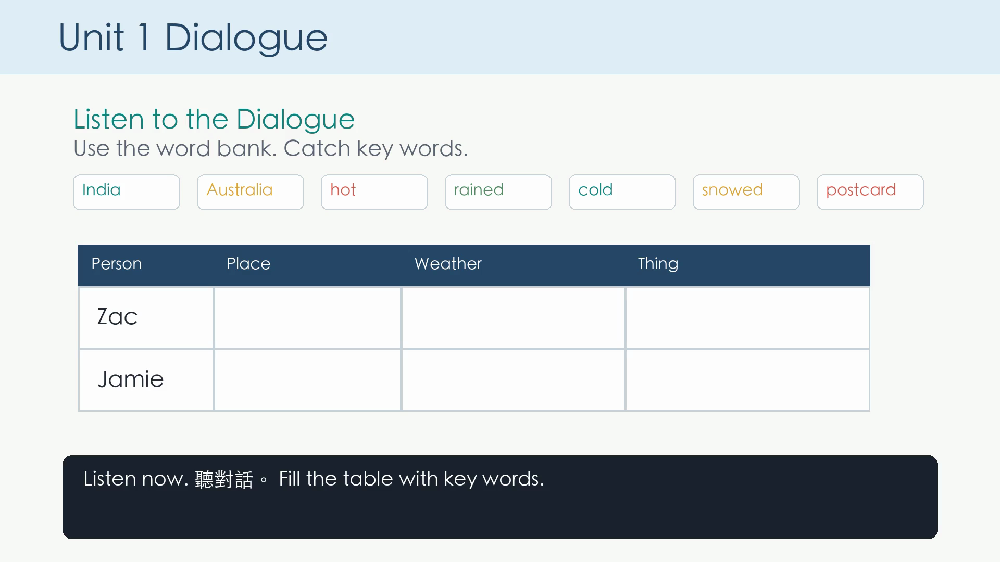

Who, where, weather, one thing.
Book 3 Unit 1
愛思學 AI See Learn
A first prototype for AI warm-up, listening support, task-path testing, and personalized classroom flow.

No student answer database in this version.
Progress can continue locally on the same device.